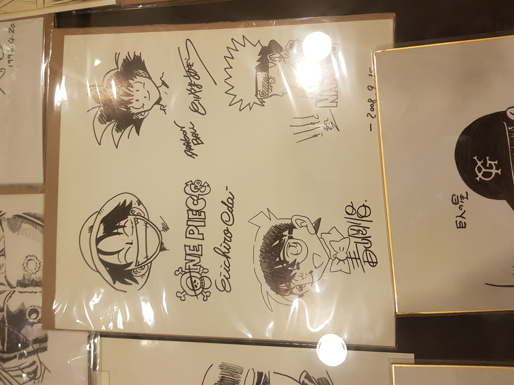

Il termine anime, dall'abbreviazione di animēshon (traslitterazione giapponese della parola inglese animation, lett. "animazione"), è un neologismo con cui in Giappone,
a partire dalla fine degli anni settanta del XX secolo, si indicano l'animazione e i film d'animazione (giapponesi e non) , mentre in Occidente viene comunemente utilizzato per indicare le opere di animazione di produzione giapponese,
comprese quelle precedenti l'esordio del lemma stesso.
Manga è un termine giapponese che indica i fumetti di piccolo formato originari del Giappone. In Giappone il termine indica tutti i fumetti, indipendentemente dal target, dalle tematiche e dalla nazionalità di origine. Il fumetto giapponese include opere in una grande varietà di generi, come avventura, romantico, storico, commedia, fantascienza, fantasy, giallo, horror ed erotico.
A partire dagli anni cinquanta il manga è diventato uno dei settori principali nell'industria editoriale giapponese, con un mercato di 406 miliardi di yen nel 2007 e 420 miliardi nel 2009.

Come si leggono i manga?
Il manga si legge al contrario rispetto al fumetto occidentale, cioè partendo da quella che per gli occidentali è l'ultima pagina, con la rilegatura alla destra; analogamente le vignette si leggono da destra verso sinistra ma sempre comunque dall'alto verso il basso. Esistono, tuttavia, eccezioni di opere realizzate per essere lette secondo l'usanza occidentale. Inizialmente prevaleva la disposizione verticale delle vignette ma successivamente, dalla fine degli anni quaranta, è stata introdotta la disposizione orizzontale che poi si è mantenuta sostituendo quella verticale.